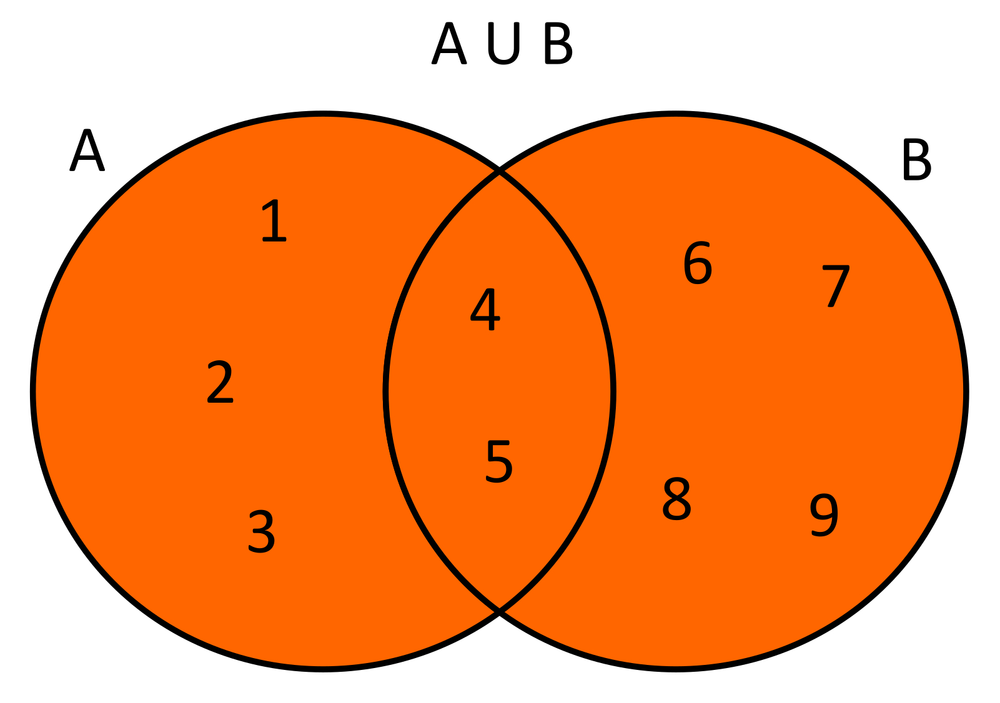
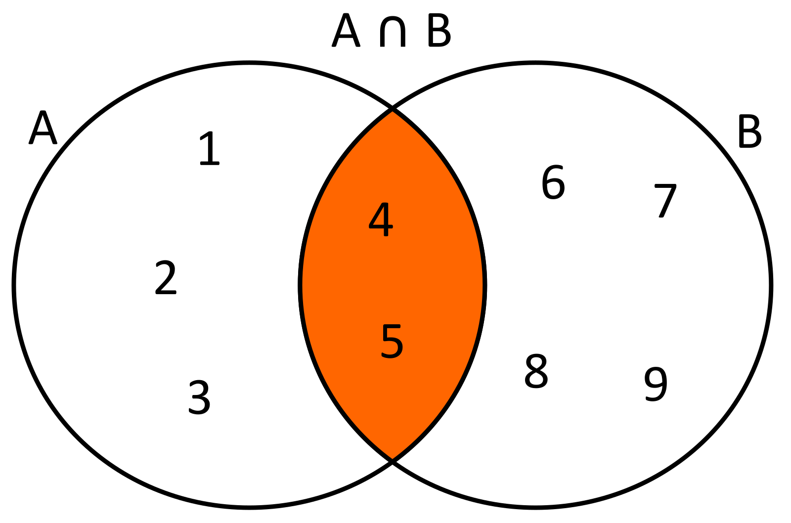
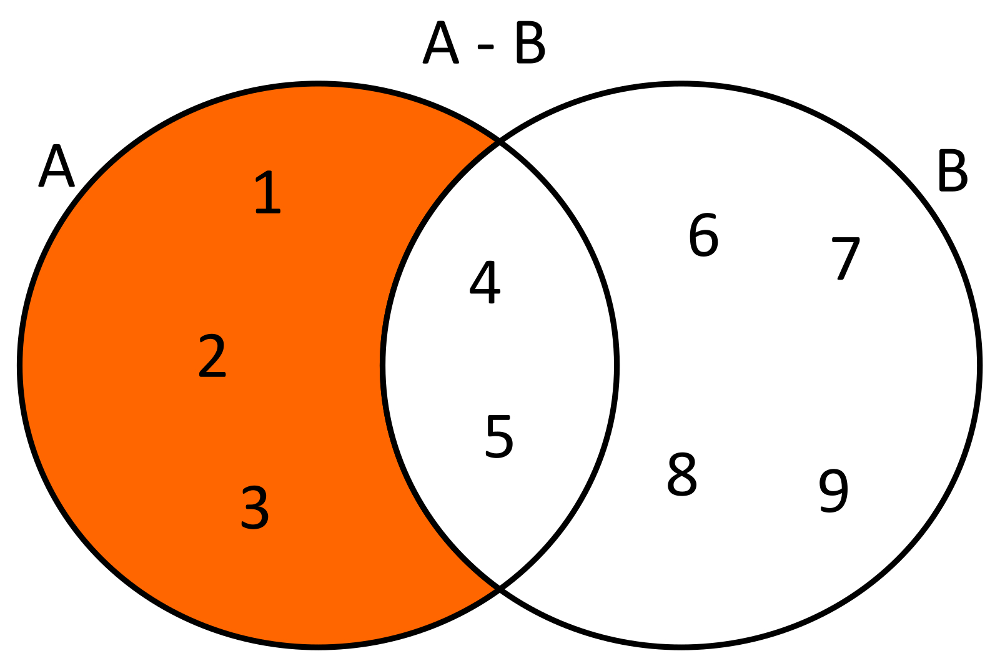
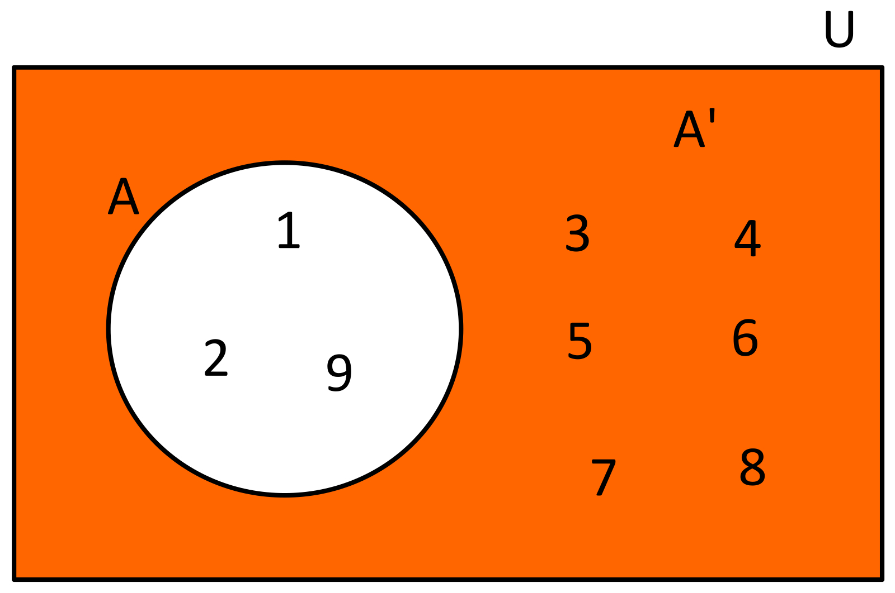

Operaciones Fundamentales en la Teoría de Conjuntos
Los conjuntos son la base de las bases de datos y la lógica de programación.
Unión ($\cup$)
A $\cup$ B
Agrupa los elementos de ambos conjuntos. "Todo lo que está en A O en B".
Definición: $x \in (A \cup B) \iff x \in A \lor x \in B$
Intersección ($\cap$)
A $\cap$ B
Solo los elementos comunes. "Lo que está en A Y en B".
Definición: $x \in (A \cap B) \iff x \in A \land x \in B$
Diferencia ($-$)
A - B
Elementos que están en A pero se les quita lo que tengan de B.
¡Ojo! $A - B \neq B - A$
Complemento ($A^c$ o $A'$)
Lo que le falta a A para ser igual al Universo ($U$).
A^c = U - A
